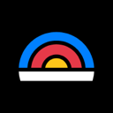

Evals & observability AI agent tools
41 evals & observability tools in the AgentScout directory, each with a link-checked listing.
Updated
There are 41 evals & observability tools: 23 open source, 3 source-available, 10 free or freemium, 4 paid, usage-based or enterprise, 1 pricing on the maker's site.
Quick comparison Top 10 of 41 listed below. Pricing as the maker states it; blank means we don't have it.
| Tool | Pricing | Best for | Open source |
|---|---|---|---|
| Open source + cloud | Monitor & evaluate agents | Yes | |
| Tracely | Open source + cloud | Monitor & evaluate agents | Yes |
| Open source | Monitor & evaluate agents | Yes | |
| Firedrill | Free | Connect tools via MCP | |
| Openlayer MCP | Freemium | Monitor & evaluate agents | |
| AI Beat | Open source | Monitor & evaluate agents | Yes |
| See site | Write code | ||
| Rogue | Open source | Write code | Yes |
| Source-available | Control a computer | Source-available | |
| Open source + cloud | Monitor & evaluate agents | Yes |
Tasks in this category
Showing 41 of 41 tools
Superlog
Superlog runs AI agents on routine engineering work around production. You set up automations with triggers and connectors, for example rating each new Sentry issue, posting a plain-language summary to Slack and opening a pull request with the fix, comparing error rates and latency against their normal range every hour, adding missing logs and spans to hard-to-debug code paths, or answering community questions from your code and docs. You choose the model and agent harness and bring your own tokens or subscriptions. The core is open source (Apache-2.0) with a hosted version.
Added
Tracely
Tracely is open-source, trace-native CI/CD for AI agents: it grades every production trace with evaluators, clusters failures into issues, freezes bad runs into replayable test cases and blocks pull requests that would reintroduce them.
Added
AgentEnv Framework
AgentEnv Framework is Scale AI's open-source Python SDK and CLI for building RL environments for agents: containerized worlds with realistic apps and data behind an MCP gateway, plus tasks (as DAGs) that grade any agent in any sandbox.
Added
Firedrill
A simulation platform for testing AI agents before launch: it runs your agent through realistic scenarios with simulated users and tools, scores results against checks or rubrics and shows where it fails. Includes a remote MCP server.
Added
Openlayer MCP
Openlayer's MCP server, letting coding agents pull evaluation results, failing tests and monitoring data from Openlayer so they can debug and improve AI systems from the IDE.
Added
AI Beat
An open-source AI red-teaming suite: PromptBeat attacks models and prompts, and AgentBeat runs black-box security evaluations against HTTP-exposed agents.
Added
agent-qa (Vostride)
A self-improving AI QA agent with persistent memory that tests web, Android and iOS apps from plain-English test steps, for developers and coding agents.
Added
Rogue
Agent evaluator and red-team tool that probes your agent with test conversations and attacks and reports pass or fail against your policies.
Added
Kiln
Free desktop app and open-source library for building AI systems with evals, RAG, agents, fine-tuning and synthetic data in one workbench.
Added
Laminar
Open-source observability platform for AI agents with OpenTelemetry tracing, plain-English behavior tracking and alerts.
Added
MCPJam Inspector
Open-source testing and evals platform for MCP servers, MCP apps and ChatGPT apps across many clients and models.
Added
Future AGI
Open-source platform for evaluating, tracing, simulating and guarding LLM and AI agent applications, self-hostable or cloud.
Added
Opik
Comet's open-source platform for tracing, evaluating and monitoring LLM apps, RAG systems and agent workflows, self-hosted or in the cloud.
Added
SWE-bench
Benchmark that tests whether language models and coding agents can resolve real GitHub issues, with multimodal and verified variants.
Added

Latitude
Observability platform for AI agents that captures traces, groups failures into signals and verifies fixes against real traces.
Added
Pezzo
Cloud-native LLMOps platform for prompt design, versioning, delivery, observability and cost monitoring.
Added
OSWorld
Benchmark for multimodal computer-use agents on open-ended tasks in real desktop environments.
Added
BrowserGym
ServiceNow's Gym environment for building, testing and evaluating web agents across browser benchmarks.
Added
Confident AI
Enterprise platform for AI evals and observability that gives teams one standard for measuring and monitoring AI quality.
Added
Coval
Testing and evaluation platform for voice agents, with simulations, production evals and human QA.
Added
Arize AI
Agent observability and evaluation platform with tracing, evals and experiments for improving AI agents.
Added
OpenInference
OpenTelemetry-based instrumentation that traces LLM and agent framework calls so any observability backend can show them.
Added
Judgeval
Open-source SDK for tracing agents and scoring them with agent judges, so failures in production can be found and fixes checked.
Added
Agent Memory Leaderboard
Public leaderboard and open evaluation protocol, run by a group of universities and labs, for comparing long-term memory systems for agents in recurring submission rounds.
Added
Kore.ai Autoloop
Optimization engine in Kore.ai Agent Platform Artemis that evaluates agents against business goals, diagnoses failures from traces, applies targeted fixes, and re-verifies; GA Oct 2026.
Added
CoreWeave Forge
One product to run, observe, evaluate and post-train agents (W&B, OpenPipe, sandboxes).
Added
LangSmith
Tracing, evals and monitoring for LLM apps and agents.
Added
Langfuse
Open-source LLM observability, tracing and evals.
Added
Braintrust
Evals and observability platform for AI products.
Added
Arize Phoenix
Open-source tracing and evaluation for LLM apps.
Added
W&B Weave
Weights & Biases toolkit for tracing and evaluating agents.
Added
AgentOps
Monitoring and session replay for AI agents.
Added
Helicone
Open-source LLM observability and gateway.
Added
Respan
Observability and evaluation platform for LLM apps and agents.
Added
MLflow
Open-source platform for tracing, evaluating and managing agents, LLM apps and ML models.
Added
Agenta
Open-source LLMOps platform for prompt management, evaluation and observability.
Added
TruLens
Evaluation and tracking for LLM experiments and AI agents.
Added
OpenLIT
Open-source platform to trace, evaluate and guard agents and LLM apps.
Added
Basalt
Captures customer behavior so your AI agent can learn and improve from real interactions.
Added
Hamming AI
Testing and QA platform for voice and chat agents that generates scenarios and replays real calls.
Added
Galileo Agent Leaderboard
Galileo's leaderboard that ranks how well LLMs perform as agents on tool use and multi-step tasks.
Added
Top evals & observability repos on GitHub (25)
| Repo | GitHub stars | Licence | Last push |
|---|---|---|---|
| 28,418 | Apache License 2.0 | 2026-10-21 | |
| 22,700 | Apache License 2.0 | 2026-10-21 | |
| 11,828 | Elastic License 2.0 (source-available) | 2026-10-21 | |
| 6,067 | MIT | 2026-09-02 | |
| 5,195 | — | 2026-10-21 | |
| 4,840 | MIT License, except ee/ directories (separate licence) | 2026-10-20 | |
| Latitude ↗ | 4,723 | — | 2026-10-20 |
| 3,602 | MIT | 2026-10-19 | |
| 3,400 | — | 2026-10-16 | |
| Pezzo ↗ | 3,277 | — | 2026-08-21 |
| 3,217 | — | 2026-10-21 | |
| 2,853 | Apache License 2.0 | 2026-10-21 | |
| 2,269 | — | 2026-10-21 | |
| 2,174 | — | 2026-10-19 | |
| 1,467 | — | — |
Top 15 of 25 by stars. Stars and licence come from each repo, checked when the listing was last verified.
All categories
Related searches
Who uses these
Best-of lists
Task guides
Facts come from our directory listings; pricing is as each maker states it. Check official sites before you choose.